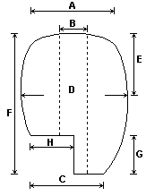
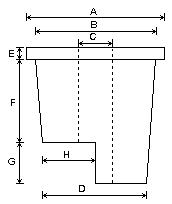
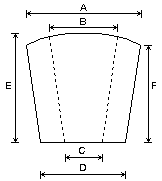

| N.B. : |
|
|
 | ||||||||||||||||||||||||||||||||||||||||||||||||||||||||||||||||||||||||
|
 | ||||||||||||||||||||||||||||||||||||||||||||||||||||||||||||||||||||||||
|
 | ||||||||||||||||||||||||||||||||||||||||||||||||||||||||||||||||||||||||
Note :
(1) L'Orgue Aristide Cavaillé-Coll de l'église Notre-Dame de Saint Dizier
Relevé Technique par Laurent Plet, facteur d'orgues
La Flûte Harmonique
Publication de l'Association Aristide Cavaillé-Coll
Année 1993, numéro spécial 66,67 et 68, page 135.